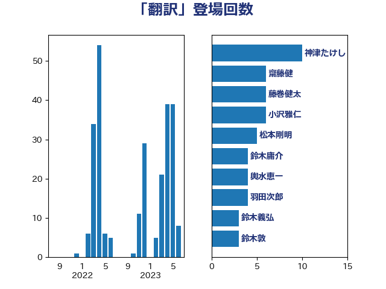

単語「翻訳」

| 神津たけし | 立憲民主党 | 10 回 |
| 齋藤健 | 自由民主党 | 6 回 |
| 藤巻健太 | 日本維新の会 | 6 回 |
| 小沢雅仁 | 立憲民主党 | 6 回 |
| 松本剛明 | 自由民主党 | 5 回 |
| 鈴木庸介 | 立憲民主党 | 4 回 |
| 輿水恵一 | 公明党 | 4 回 |
| 羽田次郎 | 立憲民主党 | 4 回 |
| 鈴木義弘 | 国民民主党 | 3 回 |
| 鈴木敦 | 国民民主党 | 3 回 |
| 谷公一 | 自由民主党 | 3 回 |
| 穀田恵二 | 日本共産党 | 3 回 |
| 櫻井周 | 立憲民主党 | 3 回 |
| 林芳正 | 自由民主党 | 3 回 |
| 宮口治子 | 立憲民主党 | 3 回 |
| 安江伸夫 | 公明党 | 3 回 |
| 塩村あやか | 立憲民主党 | 3 回 |
| 北神圭朗 | 無所属 | 3 回 |
| 高橋光男 | 公明党 | 2 回 |
| 須藤元気 | 無所属 | 2 回 |
| 青柳仁士 | 日本維新の会 | 2 回 |
| 阿部弘樹 | 日本維新の会 | 2 回 |
| 荒井優 | 立憲民主党 | 2 回 |
| 米山隆一 | 立憲民主党 | 2 回 |
| 簗和生 | 自由民主党 | 2 回 |
| 湯原俊二 | 立憲民主党 | 2 回 |
| 沢田良 | 日本維新の会 | 2 回 |
| 永岡桂子 | 自由民主党 | 2 回 |
| 柚木道義 | 立憲民主党 | 2 回 |
| 杉尾秀哉 | 立憲民主党 | 2 回 |
| 日下正喜 | 公明党 | 2 回 |
| 川合孝典 | 国民民主党 | 2 回 |
| 山田美樹 | 自由民主党 | 2 回 |
| 吉田はるみ | 立憲民主党 | 2 回 |
| 伊藤孝恵 | 国民民主党 | 2 回 |
| 高良鉄美 | 無所属 | 1 回 |
| 青島健太 | 日本維新の会 | 1 回 |
| 門山宏哲 | 自由民主党 | 1 回 |
| 鎌田さゆり | 立憲民主党 | 1 回 |
| 金子恭之 | 自由民主党 | 1 回 |
| 道下大樹 | 立憲民主党 | 1 回 |
| 足立康史 | 日本維新の会 | 1 回 |
| 谷田川元 | 立憲民主党 | 1 回 |
| 谷合正明 | 公明党 | 1 回 |
| 西岡秀子 | 国民民主党 | 1 回 |
| 葉梨康弘 | 自由民主党 | 1 回 |
| 紙智子 | 日本共産党 | 1 回 |
| 福島みずほ | 社会民主党 | 1 回 |
| 石橋林太郎 | 自由民主党 | 1 回 |
| 田中昌史 | 自由民主党 | 1 回 |
| 猪瀬直樹 | 日本維新の会 | 1 回 |
| 漆間譲司 | 日本維新の会 | 1 回 |
| 渡辺博道 | 自由民主党 | 1 回 |
| 浅川義治 | 日本維新の会 | 1 回 |
| 泉田裕彦 | 自由民主党 | 1 回 |
| 河野義博 | 公明党 | 1 回 |
| 柴田巧 | 日本維新の会 | 1 回 |
| 東徹 | 日本維新の会 | 1 回 |
| 本村伸子 | 日本共産党 | 1 回 |
| 後藤茂之 | 自由民主党 | 1 回 |
| 岡本あき子 | 立憲民主党 | 1 回 |
| 山下貴司 | 自由民主党 | 1 回 |
| 小野田紀美 | 自由民主党 | 1 回 |
| 小川淳也 | 立憲民主党 | 1 回 |
| 宮本岳志 | 日本共産党 | 1 回 |
| 宮崎勝 | 公明党 | 1 回 |
| 奥野総一郎 | 立憲民主党 | 1 回 |
| 大塚拓 | 自由民主党 | 1 回 |
| 古川禎久 | 自由民主党 | 1 回 |
| 北側一雄 | 公明党 | 1 回 |
| 佐々木さやか | 公明党 | 1 回 |
| 井林辰憲 | 自由民主党 | 1 回 |
| 中谷一馬 | 立憲民主党 | 1 回 |
| 中西祐介 | 自由民主党 | 1 回 |
| 中条きよし | 日本維新の会 | 1 回 |
| 三木圭恵 | 日本維新の会 | 1 回 |